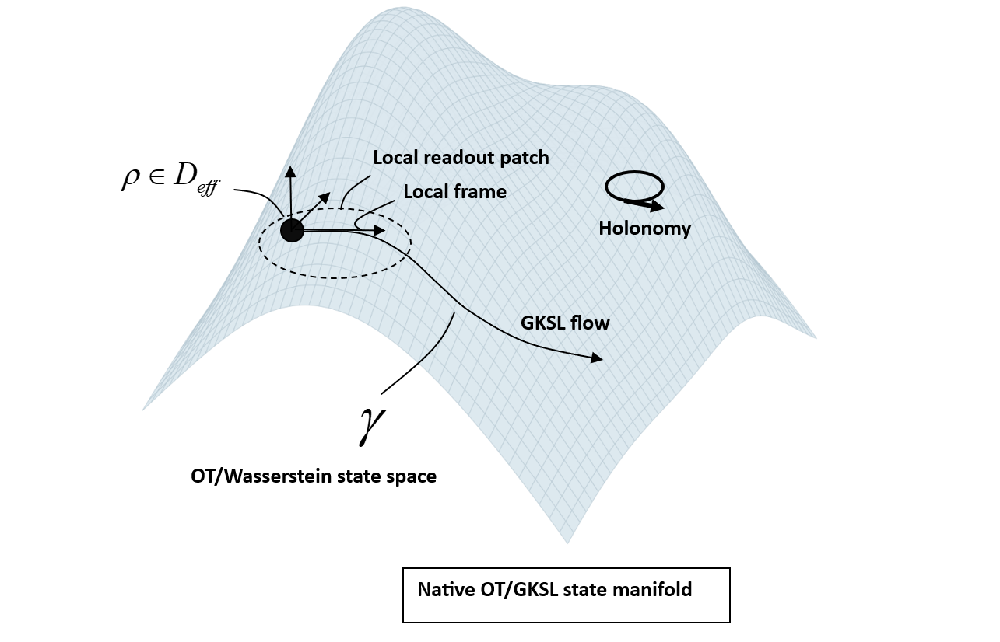
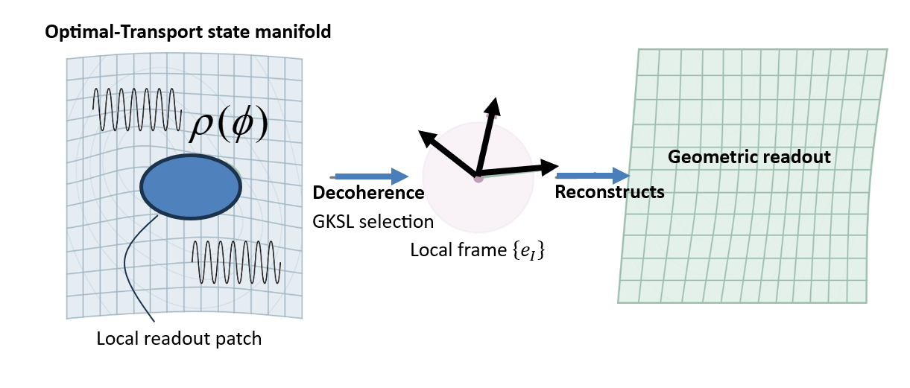
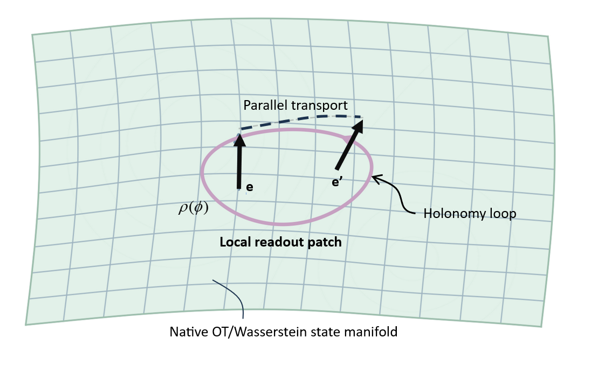
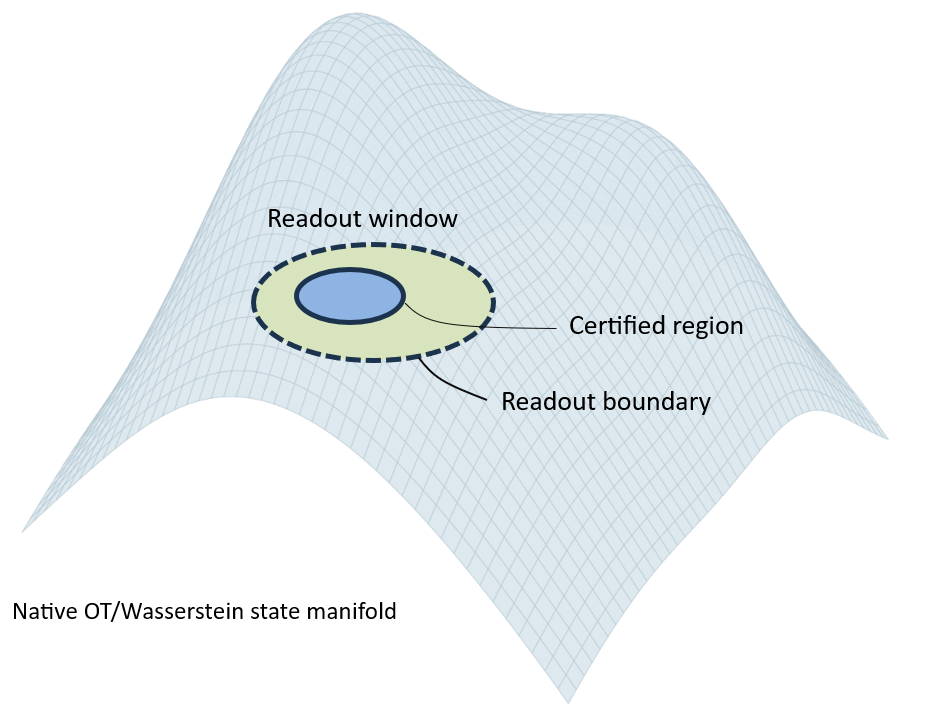

Figure 1 — Native OT/GKSL state manifold

Schematic native OT/GKSL state-manifold representation with a density operator, a local readout patch, GKSL flow, and holonomy on an optimal-transport state space.
Researcher — optimal transport, gravity, GKSL
This page presents a research on certified geometric readout from native OT/GKSL state dynamics, with emphasis on Einstein-locked gravitational closure, local holonomy, finite certified readout domains, and low-energy testability of source-side constitutive effects.
This site presents a unified theoretical corpus at the intersection of optimal transport, GKSL open-system dynamics, certified geometric readout, Einstein-locked gravitational closure, temporal certification, spacetime-readout solvability, and causal-local semantics. The framework is not introduced as a weak-field ansatz added to general relativity, nor as an open-ended emergence narrative, but as a closed certified-domain architecture with a fixed native ontology, explicit structural locks, exact reduced dynamics on certified sectors, controlled recovery regimes, and low-energy falsifiable consequences.
The theory is formulated at native level on a finite effective manifold of faithful density operators, governed by GKSL open-system dynamics and, in the detailed-balance sector, by a quantum optimal-transport geometry with entropy-gradient-flow structure and native entropic ordering. Classical spacetime is not assumed as a primitive microscopic arena. It is reconstructed only as a certified readout from native state dynamics through an operational map and a controlled OT-to-readout bridge.
The certified readout layer is asserted only on a controlled window Wacc, where stable record functionals define a local operational coframe, readable rank conditions remain satisfied, and bridge defects remain auditable. The temporal branch is stricter still: certified readable ticks live only on a subwindow Wtick ⊂ Wacc. In the unified spacetime formulation, full spacetime readability occupies a jointly certified window Wst ⊂ Wacc, where temporal admissibility, geometric admissibility, and bridge admissibility remain simultaneously compatible.
A central architectural constraint is the Einstein lock. The two-derivative Einstein-Hilbert kinetic block is held in strictly standard form, with universal constant G0 and no readable state-dependent prefactor multiplying the curvature term. Readable preparation dependence is therefore excluded from the kinetic gravitational sector and displaced into a source-side constitutive channel together with the response/exchange structure required by covariant closure.
The corpus now contains several logically distinct but internally connected layers. At native level, it provides OT/GKSL dynamics on effective state space. On certified reduced sectors, it provides exact nonlinear reduced equations rather than phenomenological weak-field approximations. On the readout side, it provides a nonlinear Einstein-locked closure of the reconstructed metric block before any Newtonian or weak-field limit is imposed. Standard Dirac-, Maxwell-, Yang-Mills-, Poisson-, Newtonian-, and Einstein-like equations appear only as controlled recoveries under additional hypotheses.
The theory also contains theorem-level analyses of the finite certified boundary of geometric readout, theorem-level temporal certification on finite support, a unified certified spacetime readout layer, and a causal-local branch in which locality, causality, and relativity are treated as certified readout properties rather than primitive microscopic axioms. In particular, the principle of relativity survives in the framework as a theorem of certified local readout-frame equivalence on the causal-local solvability corridor.
Beyond the architectural layer, the corpus now includes physically nontrivial source-side outputs. In the reduced constitutive-holonomic sector, theorem-level results establish nontrivial stationary branches, a positive reduced effective mass scale, and a vacuum-like residual sourcing term, with Einstein-locked lifting into the source/response closure and without modification of the kinetic gravitational sector.
The framework is therefore not merely interpretive. It includes exact reduced differential structures, certified readout geometry, nonlinear Einstein-locked closure, finite-resource certification theorems, branch-resolved visible structure, and an explicit low-energy operational test branch based on calibrated state proxies and narrow-band lock-in observables. The figures collected below summarize the main architectural layers of this certified-domain theory.
Selected research figures related to GKSL gravity, optimal transport, geometric readout, local holonomy, and certified readout-window structure.

Schematic native OT/GKSL state-manifold representation with a density operator, a local readout patch, GKSL flow, and holonomy on an optimal-transport state space.

Local geometric readout reconstructed from a native optimal-transport state patch, via GKSL selection and a local frame.

Schematic local holonomy on a native OT/Wasserstein state patch, illustrating the nontrivial return of local orientation around a closed loop.

Certified readout-window structure on the native state manifold, showing a readout window, a certified region, and a readout boundary.
Foundational statement of the overall architecture, presenting a testable certified-domain Einstein-locked OT/GKSL framework for coherence-dependent gravitational sourcing.
Reduced-sector analysis emphasizing exact nonlinear dynamics and explicit readout signatures in an OT/QCD setting.
Core framework paper linking optimal-transport open-system dynamics to a certified nonlinear Einstein readout.
Technical note on entropic tick cost, spectral budget, and the theorem-level high-energy cutoff boundary of classical geometric OT-GKSL readout.
Technical note on vacuum-like residual energy emerging from constitutive-holonomic balance in a minimal reduced OT-C3 sector.
For reading, citation, or technical questions: gwenole.bocquet@ieee.org